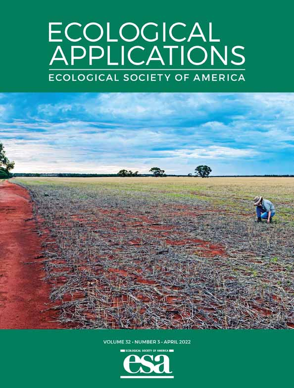
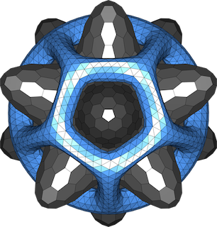
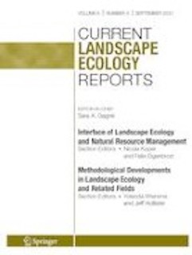
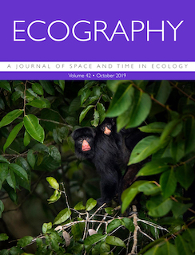
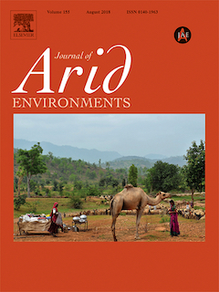

M.H.K. Hesselbarth
Home
Publications
Poster & Talks
Software
CV
Contact
Publications
Here you can find a list of all my publications.
Order By
Default
Date - Oldest
Date - Newest
Title
Date
Title

4/3/22
Mechanistic support for increased primary production around artificial reefs

12/6/21
shar: a R package to analyze species-habitat associations using point pattern analysis

5/5/21
Open-source tools in R for landscape ecology
5/11/20
Analysing and modelling spatial patterns to infer the influence of environmental heterogeneity using point pattern analysis, individual-based simulation modelling and landscape metrics
3/31/20
Alternative quantifications of landscape complementation to model gene flow in Banded Longhorn Beetles [Typocerus v. velutinus (Olivier)]

7/2/19
landscapemetrics: an open‐source R tool to calculate landscape metrics

6/8/18
Density-dependent spatial patterning of woody plants differs between a semi-arid and a mesic savanna in South Africa
No matching items